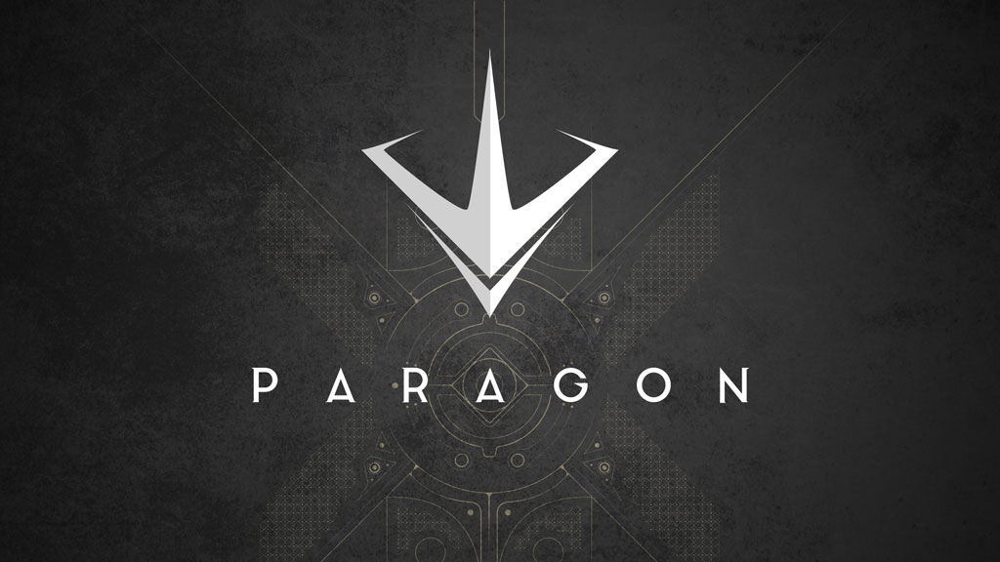

About Me
My name is Michael Shi, and I'm a 14 year old student studying at Victoria Park C.I. My hobbies include programming, gaming, and occasionally making designs.
Programming
I've been programming for two years, and participated in Waterloo's Beaver Contest, CCC Junior, and am soon going to Thacks 2. The main language I program in is Java, and I have dabbled in Html, and CSS.
I originally started programming because I was interested in technology and gaming. I wanted to learn how to make my own games, but now I prefer contest programming and making other projects. Making games just isn't my sort of thing; too many things that can break and in such complicated ways.
Gaming
The thing that first got me into technology were games. Those old flash games, browser games and now the 50GB games. I still play games in my free time, with my main games being Paragon, a MOBA, and Rainbow Six Siege, a FPS game.
Some other games I've played include Warface, another FPS game which I got pretty good at, and then found Paragon (and never turned back). I also have a decent amount of hours (>50) on Unturned, Team Fortress 2, Terraria, America's Army Proving Grounds, War Thunder, Path of Exile, and Payday 2, as well as some other games I've forgotten.
If you ever want to play with me, just send me a message to any of the contact links below.
Contact
me
Gmail: 1027Michael@gmail.com
Facebook: https://www.facebook.com/icecappuccino
Discord: Icecap#5422
Bibliography & Validators
(hidden at the bottom of the page so it's not noticeable unless you're looking for it)